F1 Podium Predictor: A Simple Model
Series · Part 2 of N
This is the second in the F1 predictor series, the first one can be found here.
All the code lives over at github.com/DaveAhearne/F1Prediction if you want to follow along.
Where we ended up last time is that we have a heurisic model that gives us the following metrics:
| AUC/ROC | Brier Score |
| 0.79 | 0.12 |
What we'd like to do now, is to try and find an ML method that can do better than this, but first off. Where do we even start?
So many models, so little compute
The first question is to identify what kind of problem we're actually solving. We're not labelling drivers as podium or not podium, we're predicting a probability for each driver. That's a regression framing, and it drives every decision below.
Neural nets are off the table. They're exceptional at finding complex non-linear patterns, but they're incredibly data hungry, millions of rows is a reasonable baseline for stable training. At 26,000 rows we'd be fighting overfitting from the start, with no guarantee the added complexity pays off.
That leaves tree-based models, which are well suited to structured tabular data at this scale. They handle mixed feature types, numeric rolling stats, categorical constructor IDs require minimal preprocessing, and produce well-calibrated probability outputs via a binary objective.
Within that family, we're choosing LightGBM over XGBoost. XGBoost grows trees level-wise, splitting every node at a given depth before going deeper. That makes it more conservative, more resilient to outliers, and better suited to very small or heavily imbalanced datasets. But, it's slower because it pays attention to everything exhaustively. LightGBM grows leaf-wise, greedily splitting whichever leaf offers the highest loss reduction. That makes it faster, which matters here because we'll be iterating heavily on feature engineering.

One cavet is that small datasets are actually more prone to overfitting with LightGBM, not less. Leaf-wise growth is aggressive, and with too few rows it can effectively memorise the training data. However, our dataset sits in a reasonable middle ground with thousands of rows, not hundreds. We can mitigate the remaining risk with regularisation parameters and cross-validation.
If the dataset were truly tiny, XGBoost would be the safer choice. But for our purposes, LightGBM should be great.
Next Steps...

// what we're building
Covet is fixing the exact problem you just read about.
Structured mutual qualification: candidates and companies matched on fit, not keyword density. No spray-and-pray. No ghosting. Rejections that actually tell you why.
Get early access